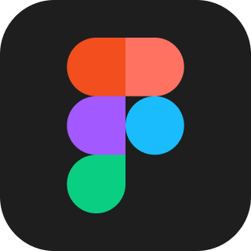
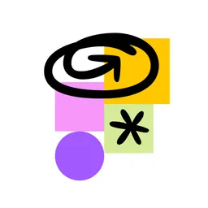

UX Designer
12 weeks


Collaborated with 4 designers and a team of developers to establish brand identity and consistency with new designs for the website landing page, roommate and housing finders, and AI chatbot.
Livin is a platform that helps students and young adults find roommates and housing in one place. My team designed a new website that would allow the platform to pivot towards this goal. The crux of the new design would be Hoshi, an AI chatbot that allowed students to describe their living needs exactly and would curate housing and roommate recommendations based on their preferences.
Livin has been launched, but is still being iterated upon. You can view the live prototype here↗
Implementing a new AI chat feature required us to reflow the entire site. A main concern was pivoting Livin's focus without confusing or alienating users.
In order to validate our decisions, we conducted interviews, surveys and observational testing to determine what users truly valued in both a roommate finder and housing search application.
I gathered data and iterated on the design of the roommate finder portion of the website. Both my observational testing and user interviews led me to change small but powerful elements of the user interaction.


By improving the core user flow, simplifying confusing terminology, and providing more robust search tools, we can align the website's functionality with its strong visual design.
Over the course of my observational testing, elements of the roommate search were changed to reflect user preferences.
Additionally, design elements were iterated upon as our design system evolved. Colors, font sizes, and component structures changed to represent a professional but inviting site.


The roommate search and profile flows changed dramatically over the course of user testing, as they should. Our low-to-mid-fidelity workflow was thorough, which allowed us to pay attention to core elements like those shown above. Ultimately, this allowed for a smoother high-fidelity transition that could be easily implemented by the developer team.

The redesigned site created a more engaging and accessible experience for students and young adults. The addition of the AI chat function was purposeful and spoke to student needs, not just aesthetics.
Apart from the central AI feature, other core flows were optimized based on user research. The roommate finder flow I focused on was particularly interesting, as some of my initial assumptions about user interactions were proven to be false. My data-driven designs helped not only in a direct sense, but also on a greater brand interaction standpoint.
Our findings and designs were pitched to the design lead and founder of Livin, then successfully implemented by the development team.
Livin's redesigned platform has been launched, but is still being iterated upon. You can visit the live site here↗